Tilting Bowl
Design Documentary Film
Tilting bowl is everyday design studio's recent work on exploring how interactive artifacts can become part (or not) of people's homes. As a group of four, my classmates and I worked with the everyday design studio to film this design documentary movie, aiming to introduce this bowl project and the design philosophy behind it.
Production Timeline
-
Pre-production Meeting
October 1th, 2015
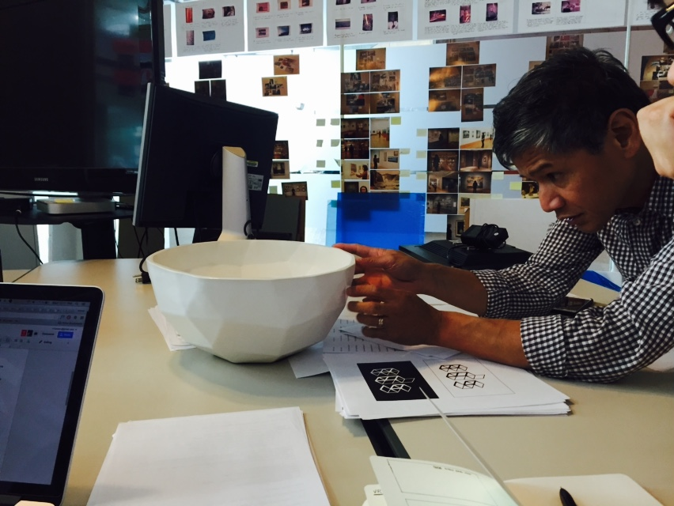Knowing the bowl, but not just the bowl
As we got client's contact, we reached out Ron Wakkary, the head of everyday design studio to get project information. By his introduction, we know about the concept of everyday design, the relationship between bowl and their design idea, and their expectation on our film.
Based on the talk, we realized that the challenge for this project is the storytelling. The bowl is a normal object. How can we attract audience to understand not only just the bowl but also the design philosophy behind it and process of making it? It remains challenge for the time to explore. -
Documentary Treatment
October 10th, 2015
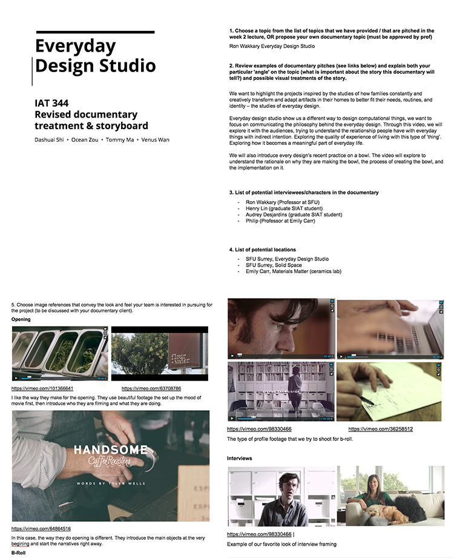Setting up the style and tone for film
After knowing the background of this project, we start planning the feeling and looks about this video. To meet client's expectation, we searched the video online and developed the moodboard to show to client. After Ron reviewing the documentary treatment, we agree on the following tones and feel about this video:
1. Higher offset and lower in contrast - to show a vintage and “craftier” feel
2. Intimate soundtracks and footages to show a genuine “relationship” between the bowl and its users
3. The care and delicateness that went into the making of the bowl -
First Time Filming
October 13th, 2015
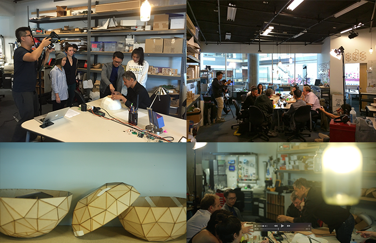Filming the b-roll
Emily Carr Material Matters team are meeting up with EDS studio today to discuss the ceramic moulds. We think it will be a good chance to catch up b-rolls for the process. So we started our first filming!
The meeting happen in ED studio and the indoor environment is too dark! Therefore, We set up lighting overall with filters to brighten up the multiple subjects. Overall, the footage we got it is pretty good. However, another two videographer and I set up different K value for color tone. Therefore, the footage we got have different color from different color. We will need to do colour correction later. OH NO! -
Filming the bowl
Oct 18th, 2015
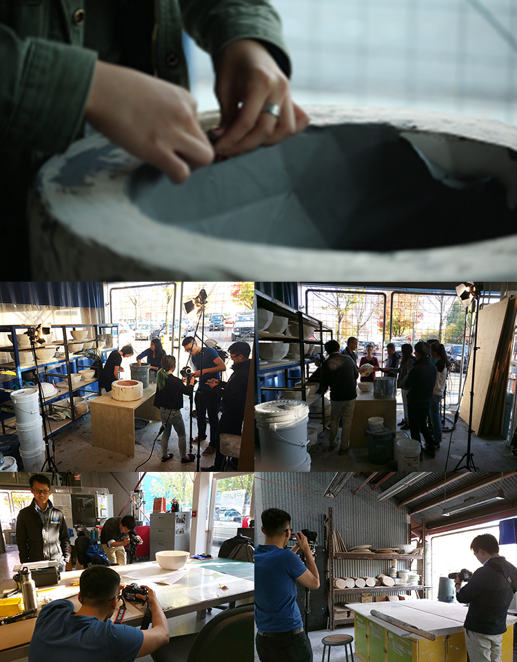Hello, Ceramic Bowl!
Although we see lots of paper prototype bowl in studio, we didn't get the chance to see bowl's final look until today! Since Ron and EDS fellows are going to emily carr to review the bowl production, we follow with them and get the chance to film the real bowl!
The weather is pretty nice, which gives us lots of good lighting and bright shooting environment. We got lots of beautiful bwol's b-roll. Beside this, we approach the people in emily carr and get to know about the process of the ceramics stage. We also record lots of soundtrack regarding the cermaics process.
It seems that the emily carr has artistic environment, which is a good filming location. We approach the people there and make appointments on filming the process footage here later. -
Storyboard
Oct 28th, 2015
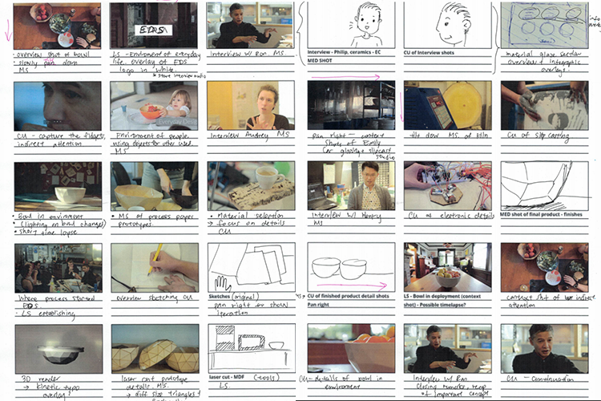A different way to brainstorming the story
Mentioned previously, storytelling is the key for our movie. Since we have clear direction on our story would be, we decide to do the storyboard differently. Unlike the other sketch storyboard, we use the footage we filmed to plan out storyboard and draw the part that are missing, which aims to give ourselves a direct feeling towards the look and tone of the movie.
By doing so, we quickly figure out the footage that we need and start scheduling the next filming. -
Interviewing with Ron Wakkary
Nov 15th, 2015
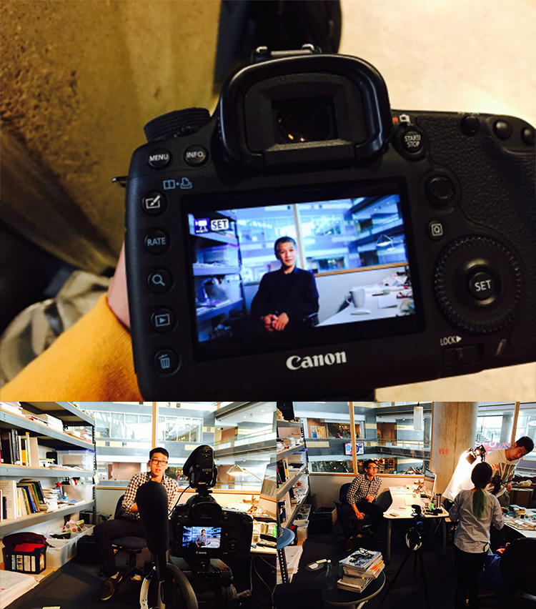Learning about the interview skills
Today, we filmed our first formal interview with the Ron Wakkary. Overall, the filming process is successful but we also have some reflection:
Based on Ron’s feedback, our interview is well-prepared. However, during the interview, we sit too far away from him, which make the communication to be a little bit not comfortable. Based on team's discussion, we realized that we didn’t leave enough time for setup, which make Ron a little bit rush in the end. During the recording, we also open full aperture, which make the footage not as sharp as we expect.
Beside these, we collected high-quality footages with appropriate lighting and beautiful frame. Good Job Team! -
Interviewing with Audrey Desjardins
Nov 17th, 2015
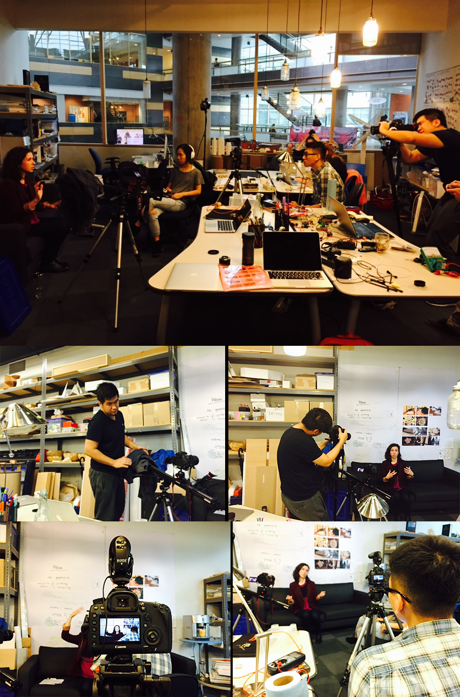What if we film in natural light?
After learning from previous interview with Ron, we have more preparation for the interview with Audrey, the material design expert for the bowl project.
For this time, we picked up different interview location in studio and decided to use natural light to film Audrey. At the begining, it is very challenging for us. We didn't borrow reflector, which make the lighting of seat location to be extremly important. We spend long time to figure out the intervie location and set up the camera IOS around 500.
The interview went pretty well and our team feels our production skills all improve dramatically. Venus now become the expert in sound recording, Tommy become the interview expert, and Rex and I become more familar with the manual focus. When we open to view the interview footage, we are have the "oh wow reaction". Cheers! -
Filming the craft process
Nov 21th, 2015
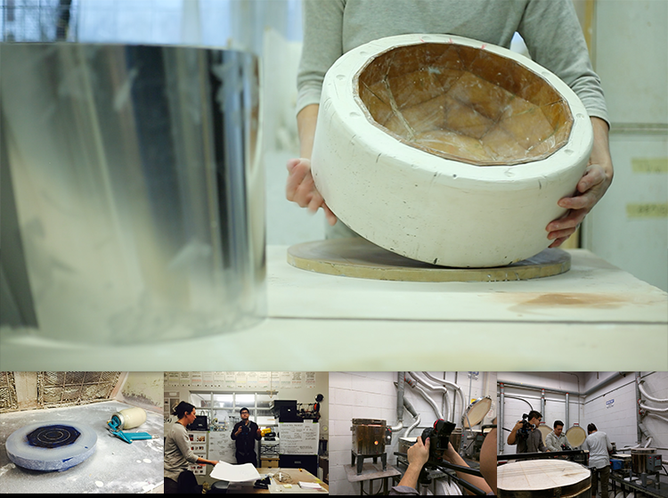Learning the use of slider?
xx
-
Re-filming Ron's interview
Nov 23th, 2015
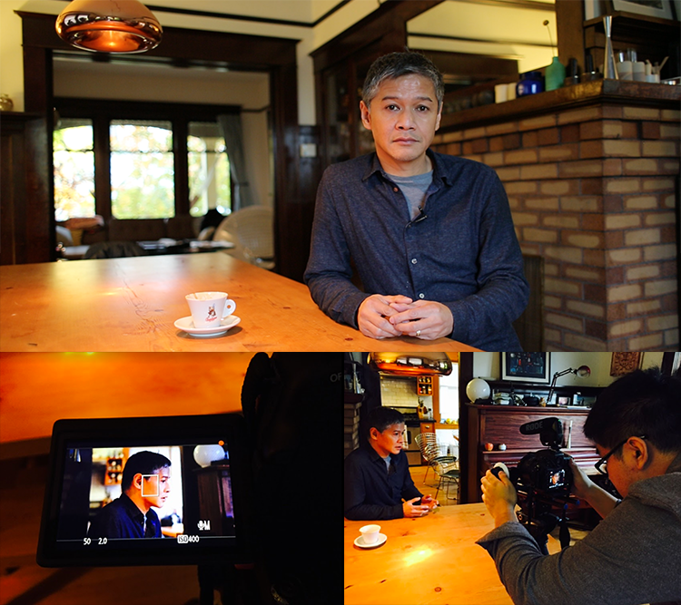Practice make filming skills better
xx
-
Timelapse
Nov 27th, 2015
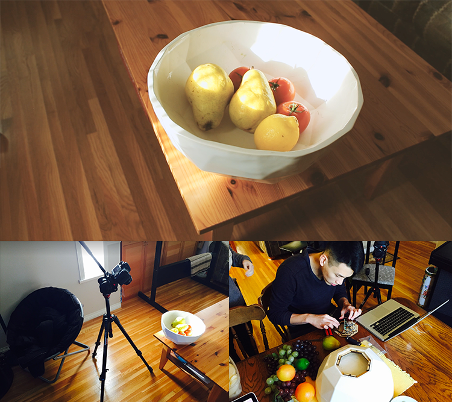It is time to try out the timelapse!
xx
-
Post Production
Nov 30th, 2015
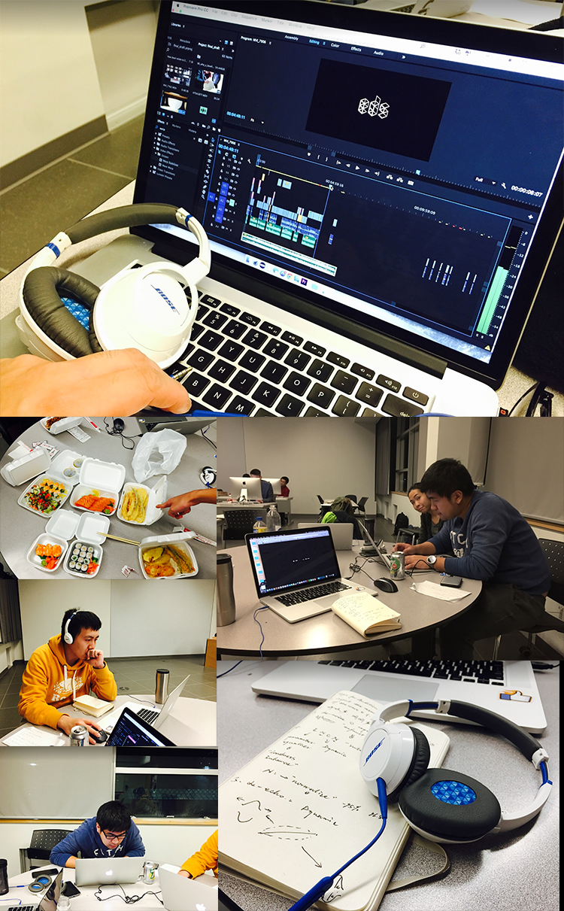Final Footage review and selection
After learning from previous interview with Ron, we have more preparation for the interview with Audrey, the material design expert for the bowl project.
Sound Design
After learning from previous interview with Ron, we have more preparation for the interview with Audrey, the material design expert for the bowl project.
Graph Design
After learning from previous interview with Ron, we have more preparation for the interview with Audrey, the material design expert for the bowl project.
Film Editing
After learning from previous interview with Ron, we have more preparation for the interview with Audrey, the material design expert for the bowl project.
Takeaways
Making a film is not just about filming
My role in the team was to research and analyze the user goals of the application. During this process, I created an user experience map, a user flow chart for the watch interfaces, mock-ups, as well as an interactive prototype using Adobe Photoshop, Illustrator, and Axure. I also made iterations of the mock-ups based on the feedback we got from our user testing sessions. By the end of the project, I was responsible for designing a product webpage which also documents the design process of this project.